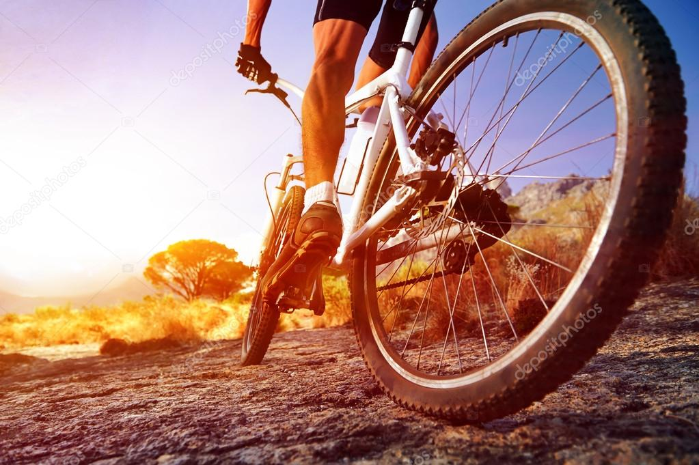
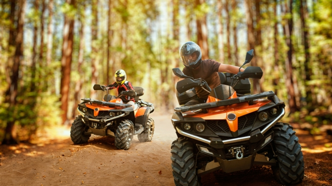
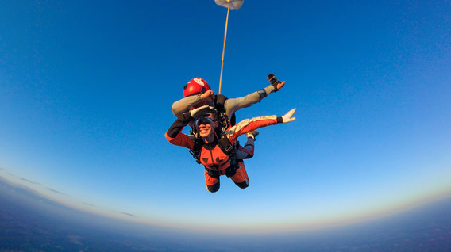
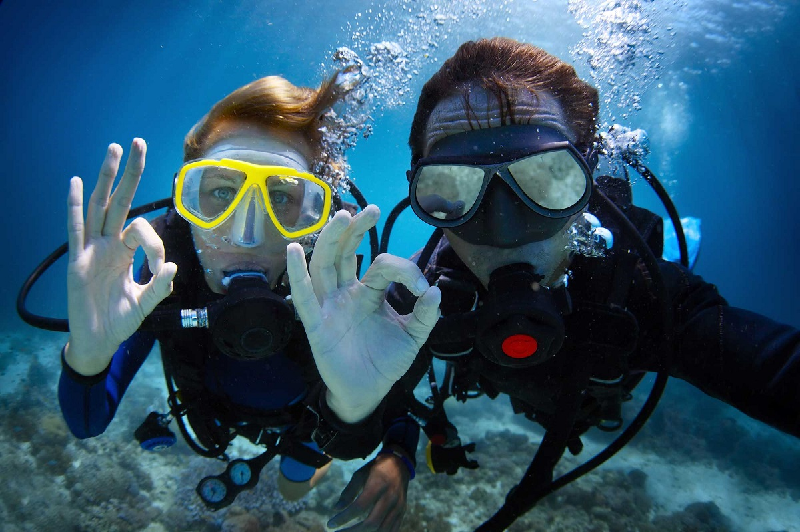
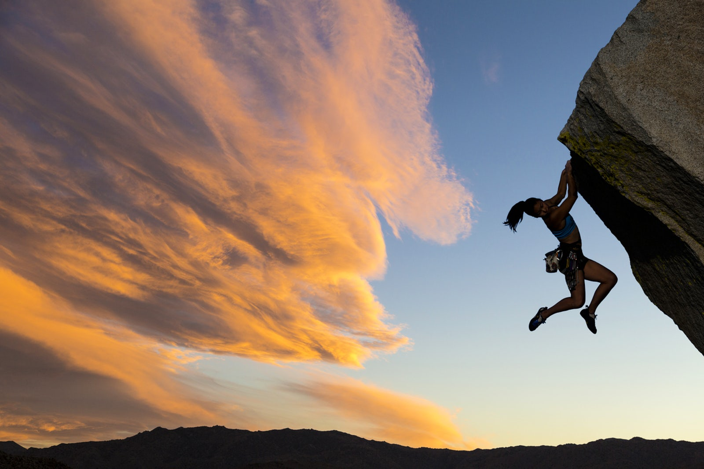

Активный отдых: самые интересные варианты активного отдыха
Активные люди не любят сидеть на месте. Даже на отдыхе они предпочитают выбирать активные игры или что-то, что зажигает их и заставляет более полно чувствовать жизнь. Наша страна имеет все возможности для спортивных развлечений: тут и высокие горы, и необъятные просторы, рек и леса, озера и пещеры – испытать на себе можно всё.
Рассмотрим идеи для тех, кто любит подвижные и спортивные виды отдыха: виды активных развлечений, активный отдых на природе и варианты отдыха в любое время года.
Содержание статьи
1.Велопрогулки
Самое простое и не менее интересное — это катание на велосипеде. Можно кататься в любом парке, в лесу, сквере, но круче всего поехать за границу, где есть протяжённые велосипедные маршруты разных уровней сложности и попробовать себя там. Но и в России таких треков достаточно. Взять к примеру Красную поляну. Разнообразный рельеф поможет испробовать свои силы и это будет для тебя отличной тренировкой.
Чтобы покататься на велосипеде и, помимо прочего, насладиться шикарными видами, выбери Золотое кольцо, где маршрут несложный, но очень живописный. Ты будешь проезжать усадьбы, старинные города и церкви. Также, если ты поедешь на Байкал, то там есть очень интересные дороги по степи, где ты увидишь солёные озёра, бухты и скалы.
2.Квадроциклы
Этот вариант отлично подойдёт, если тебе хочется любоваться природой, и при этом быстро проноситься по холмам на огромном внедорожнике. С квадроциклом острые ощущения будут гарантированы. Также инструктор поможет разобраться в принципе управления данным транспортом и покажет живописные места, по которым проходят такие маршруты.
Обычно стоит это недорого, а эмоций хватает на всю неделю после покатушек. Кстати, за отдельную плату после такой прогулки могут и накормить, и рассказать что-нибудь интересное, а также есть возможность переночевать в красивом месте, если это предусмотрено организаторами поездки.
3.Прыжок с парашютом
Если ты экстремал, который не пугается высоты, то можно выбрать для себя развлечение в виде прыжка с парашютом. Прыгать можно с разной высоты, особенно интересен будет затяжной прыжок с высоты 3000 м. Прыгают в тандеме с инструктором с самолёта, в это время развивается скорость до 200 км/ч и целых 30 секунд вы будете лететь в свободном падении.
Постарайся не испугаться и насладиться потрясающими видами с высоты птичьего полёта. Профессиональные парашютисты помогут тебе провести этот прыжок безопасно и после приземления о тебе позаботятся медики, если понадобится.
4.Дайвинг
Дайвинг — это потрясающе интересное развлечение, при котором ты погружаешься под воду в специальном костюме с кислородным баллоном, и наблюдаешь за жизнью подводного мира. Кстати, на Байкале можно заниматься дайвингом, так как это самое глубокое и чистое пресноводное озеро во всём мире. Вода Байкала прозрачная и всё видно как на ладони.
Считается, что наиболее красивые места для дайвинга расположены близ Восточного берега острова Ольхон. И там как раз проходит небольшой каньон около 100 м глубиной. Можно также, если захочется, изучить пещеры и гроты. На Байкале в поселке Листвянка находится дайвинг школа, в которой ты можешь обучиться всему, что необходимо знать для комфортного погружения. Также там ты получишь и всё снаряжение.
5.Скалолазание
Это невероятно интересный и опасный активный отдых. Попробовать себя в нём стоит хотя бы один раз в жизни, а ещё во время скалолазания задействуются все группы мышц и твоё тело будет всегда в тонусе, если ты сделаешь это своим регулярным увлечением. Конечно, за границей существует невероятное огромное количество маршрутов для покорения.
Но рядом с Россией есть Карелия, в которую можно доехать на электричке из Санкт-Петербурга. В Карелии есть Хийтольские скалы. Если ты не профессионал, то они подойдут для тебя как нельзя лучше. Для начала выбери группу с инструктором. Когда разберёшься во всех тонкостях, можешь самостоятельно попробовать покорить скалу.
А также можно пойти в поход, чтобы проникнуться атмосферой и провести ночь в палатке на открытом месте. Кстати, на Красной Поляне также есть вершина под названием Чёрная Пирамида. Она является лучшей и живописная площадкой в Сочи. С неё ты можешь наблюдать долину рек и горные посёлки, а также олимпийские объекты.
6.Восхождениее
Наверное, это самое экстремальное и энергозатратное занятие. Также оно одно из самых дорогих. Зато ощущений у тебя будет на всю оставшуюся жизнь.
Чтобы увидеть мир с высоты, отправляйся на Кавказ, или на Алтай. На Кавказе расположена великолепная двуглавая гора-вулкан под названием Эльбрус, ее высота 5642 м.
А на Алтае находится гора Белуха высотой 4509 м. Горы считаются местами силы с потрясающими видами. Чтобы подняться на такие вершины, ты должен быть физически подготовлен и иметь хоть какой-то опыт в альпинизме. Нельзя испытывать судьбу и отправляться туда в одиночку. Заранее нужно всё продумать и покупать тур у профессиональных гидов, которые является опытными проводниками и помогут выбраться из любой ситуации. Для восхождения обычно нужен даже не один гид, а целая группа
- Кстати, не забудь о том, что с собой нужно взять хотя бы минимум из того, что тебе понадобится при восхождении:;
- Два комплекта термобелья;
- ледоруб;
- навигатор;
- палки для трекинга;
- солнцезащитные очки;
- сильный крем от загара;
- бальзам для губ и лица;
- коврик для сидения на снегу;
- рюкзак минимум 80 л.